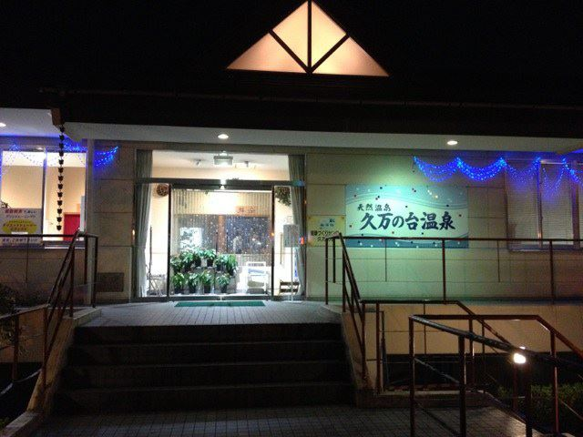
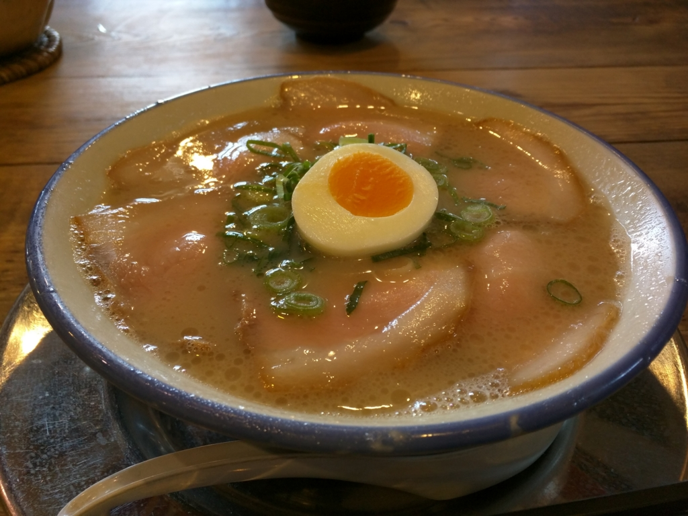

久万ノ台温泉と久留米とんこつラーメン 松山分校
公開日：

（画像は「温泉入ってきました｜ひなたが行く｜ブログ｜ひなた2009｜みんカラ - 車・自動車SNS（ブログ・パーツ・整備・燃費）」より拝借）
道後温泉もいいのですが、自宅（山越）からは電車に乗る必要があり、ちょっと面倒。なので、日頃は衣山（徒歩15分ぐらい）にある「久万ノ台温泉」を使っています。
往復ちょうど5,000歩ほどと、散歩にはちょうどいい距離。途中に古本屋と明屋書店*1があるのもポイントですね。
料金は 470円 だったかな？ 小さな露天風呂とサウナがある以外は、銭湯に毛の生えたようなところですが、のんびりするには十分。あったまったあとは、よく露天風呂の腰掛けで寝ています。お昼にぶらっと行くと人が少なくてよいのですが、たまに伊予かすり会館（http://e-hime.jp/kasuri/）の観光バスがやってきて、入浴客がやたら増えることもあるので注意ですねぇ。
ちなみに、ここはシャンプーとボディーソープが備え付けられていないので注意。銭湯なら当たり前だけど、スーパー銭湯の気分で行くとハマるかも。あと、ロッカーのカギは奇数番号がおすすめ。上の段になるので、屈まなくていいぜ(｀･ω･´)b
さて、温泉に入るとおなかが空くものですが、この辺りは割と飲食店が多いですね。夕方なら回転ずしや、パルティ・フジ衣山にある飲食店（インドカレー？ あたりが好み）、ちょっと面白いたこ焼き屋さんなんかがあります。山越方面に足を延ばせば、カレーハウスCoCo壱番屋や中華屋、讃岐うどん家なども。

今回はラーメンを食べてみました。
あんまりラーメンは食べないヒトなのですが、なんか今日は気が向いたので。

なんか福岡で食べたラーメンと似ている感じ（久留米ラーメンらしいし、そりゃそうか）。餃子は小粒で、ちょっとびっくりだった。でも、大変おいしゅうございました。辛子高菜が大好きなので（定期的に Amazon で購入してるぐらい）、ついついたくさんとって食べちゃいました。あと、バイトの女の子がかわいらしかったデス。店内が古い小学校のイメージ（？）になっているのも面白いと思いマス。
最近ちょっと開拓を怠っていたのですが、また近所でいいご飯屋さんを掘り起こしていきたいですね。
*1:“はるや”って読むんだぜ！ 引っ越した当初はわかんなかった／(^o^)＼